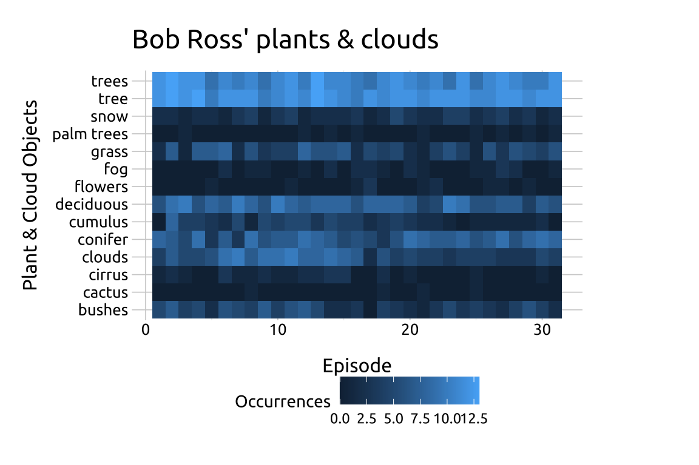
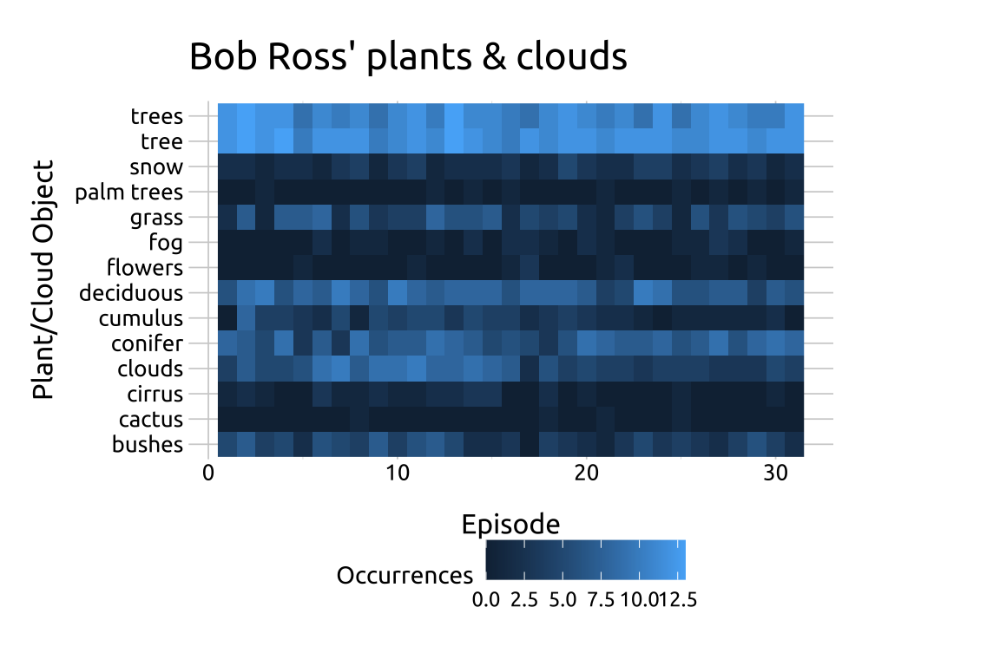

11 Heatmaps
11.1 Description
Heatmaps display quantitative values across an intersection of two categorical (or discrete) variables.
The intersecting cells contain variations of color saturation (i.e., the grade of purity or vividness) to represent the numerical values between groups.
Heatmap legends should be positioned on top or bottom and justified horizontally to preserve shape and improve readability.
11.2 Set up
PACKAGES:
Install packages.
Code
install.packages("fivethirtyeight")
library(fivethirtyeight)
library(ggplot2)DATA:

For the heatmap, we’re going to re-structure and filter the bob_ross data from the fivethirtyeight package.
Code
heatmap_ross <- fivethirtyeight::bob_ross |>
pivot_longer(-c(episode, season,
episode_num, title),
names_to = "object",
values_to = "present") |>
mutate(present = as.logical(present),
object = str_replace_all(object, "_", " ")) |>
arrange(episode, object) |>
filter(object %in% c("conifer", "trees",
"tree", "snow", "palm trees", "grass",
"flowers", "cactus", "bushes", "cirrus",
"cumulus", "deciduous", "clouds", "fog")) |>
group_by(season, object) |>
summarise(occurrences = sum(present)) |>
ungroup()
#> `summarise()` has grouped output by 'season'. You
#> can override using the `.groups` argument.11.3 Grammar
CODE:
Create labels with
labs()Initialize the graph with
ggplot()and providedataAssign
seasontox,objecttoy, andoccurrencestofillAdd the
geom_tile()Move the legend to the bottom with
theme(legend.position = "bottom")
Code
labs_heatmap_tile <- labs(
title = "Bob Ross' plants & clouds",
x = "Episode",
y = "Plant & Cloud Objects",
fill = "Occurrences")
ggp2_heatmap_tile <- ggplot(data = heatmap_ross,
aes(x = season,
y = object,
fill = occurrences)) +
geom_tile() +
theme(legend.position = "bottom")
ggp2_heatmap_tile +
labs_heatmap_tileGRAPH:

11.4 More info
In addition to geom_tile(), heatmaps can also be created with the geom_raster() function.
11.4.1 geom_raster()
Create labels with
labs()Initialize the graph with
ggplot()and providedataAssign
seasontox,objecttoy, andoccurrencesto fillAdd the
geom_raster()Move the legend to the bottom with
theme(legend.position = "bottom")
Code
labs_heatmap_raster <- labs(
title = "Bob Ross' plants & clouds",
x = "Episode",
y = "Plant/Cloud Object",
fill = "Occurrences")
ggp2_heatmap_raster <- ggplot(data = heatmap_ross,
aes(x = season,
y = object,
fill = occurrences)) +
geom_raster() +
theme(legend.position = "bottom")
ggp2_heatmap_raster +
labs_heatmap_raster